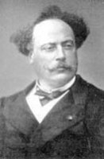

(1824 - 1895)

Hem gayrimeşru bir çocuktu hem çok esmerdi hem çok yoksuldu hem de hayatı boyunca babasının gölgesinde kalmamak için savaştı. Oğul Alexandre Dumas bütün bu sıkıntılar arasında gelmiş geçmiş en duygusal romanlardan biri olan "Kamelyalı Kadın"ı yazmayı başardı. Üstelik de romanları sayesinde hem maddi rahatlığa kavuştu hem Fransız Akademisi'ne kabul edilerek adını "Ölümsüzler" arasına yazdırdı.
Oğul Alexandre Dumas (okunuşu: Aleksandır Düma) ünlü Fransız yazar Alexandre Dumas'nın gayri meşru oğlu olarak 27 Temmuz 1824'te Paris'te doğdu. Annesi, Marie-Catherine Labay isimli bir kadın terzisiydi. 1831 yılında babası onu oğlu olarak resmen tanıdı ve iyi bir eğitim görmesini sağladı. Institution Goubaux ve Collège Bourbon'da eğitim gördü. Gayri meşru oluşunun yanı sıra koyu teni yüzünden de zorluk çekti. Özellikle okul yıllarında rengi nedeniyle arkadaşlarının şakalarına ve küçümsemelerine maruz kaldı. Babaannesi Haitili bir kadındı, bu yüzden ten rengi koyuydu. Yazma aşkı yüzünden okulu terk etti ve yazmaya başladı. Kendini yazmaya verdi, bu nedenle de maddi sıkıntılar yaşamaya başladı. Yirmi bir yaşına geldiğinde borç içindeydi. 1844 yılında eşinden ayrılan babasıyla yaşamak için Saint-Germain-en-Laye'ye taşındı. Burada zengin erkeklerle beraberlikler yaşayan Marie Duplessis ile tanıştı. Bu kadın oğul Dumas'nın başyapıtı olacak Kamelyalı Kadın isimli romana esin kaynağı oldu. Bu ünlü yapıtını daha sonra oyun haline getirdi. İngilizceye Camile adıyla uyarlanan yapıt, Verdi'nin 1853 tarihli La Traviata isimli operasına da kaynaklık etti. Oğul Dumas yazın hayatına şiir ve romanla başlasa da daha çok oyun yazmaya ilgi duydu.
Kamelyalı Kadın ilk zamanlarda pek ilgi toplayamamıştı. Birçok tiyatro tarafından reddedildi. Sonunda "Théâtre du Vaudeville" tarafından kabul edilip sahnelendi. Sonraları roman olarak ünlendi ve yazarın ününün yayılmasını sağladı. Oğul Dumas, romanından kazandığı para ile borçlarının bir kısmını kapattı ve annesine maddi yardımda bulundu. 1852 yılına kadar on iki roman daha yazdı, daha sonra ise kendini didaktik oyunlar yazmaya adadı. Bu oyunlarda özellikle ahlaki bozukluklara değindi. Ayrıca kendi yaşamındaki birçok olay ve beraberlik bu oyunlarına yansıdı.
Evli bir kadın olan Nadejda Naryschkine ile gizli bir ilişki yaşadı. Bu ilişkisinden 1860 yılında bir kız çocuğu dünyaya geldi. Çocuğun doğumundan dört yıl sonra, 1864'te evlendiler. 1867 yılında ise yarı otobiyografik bir roman olan ve daha sonraları en önemli eserlerinden biri sayılacak olan Clemanceau Olayı'nı kaleme aldı. 1885 tarihli Denis ve 1887 tarihli Francillon ile ününü arttırdı. 1874'te Fransız Akademisi'ne kabul edildi. 1894 yılında da "Légion d'Honneur" ile ödüllendirildi. Karısının ölümünden sonra sekiz yıllık metresi Henriette Régnier ile evlendi.
Oğul Alexandre Dumas, 27 Kasım 1895'te, Marly-le-Roi'de öldü ve Paris'teki Montmartre Mezarlığı'na gömüldü.
Seçme Yapıtları: Kamelyalı Kadın (İş Bankası Yayınları, 2009)